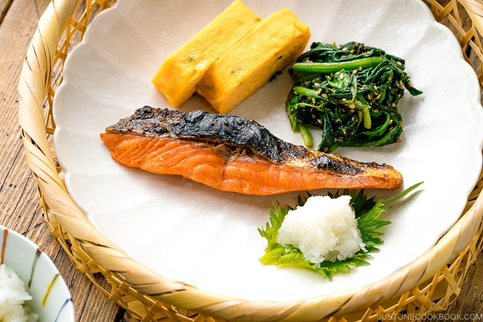

Back to menu list...
Shiojake
Serves four.

Source: Just One Cookbook
Description
It's salt-cured salmon.
Ingredients
- Four portions of salmon fillets
- 1 Tbsp sake
- 15g salt
Method
Prepare
- Distribute salmon fillets evenly onto a tray and pat dry with paper towel.
- Sprinkle salt on all sides of each salmon fillet.
- Line the bottom of an airtight container with paper towel.
- Place salmon fillets in container, layering if necessary.
- Place a layer of paper towel on top of salmon fillets. Cover with lid and keep in refrigerator for two days.
- After two days, pat salmon fillets dry with paper towel.
Cook
- Broil, bake, grill or fry. It's up to you.
Serve
- Place fillet(s) onto a plate or some other dish of your choosing.